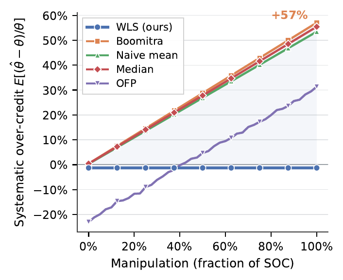
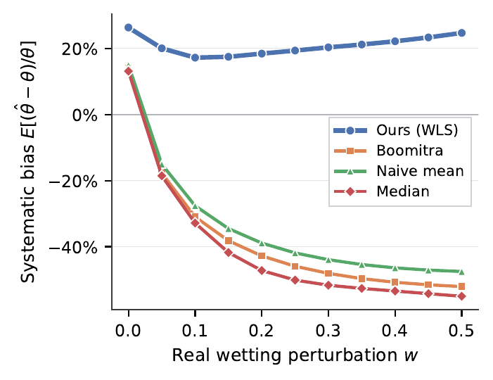
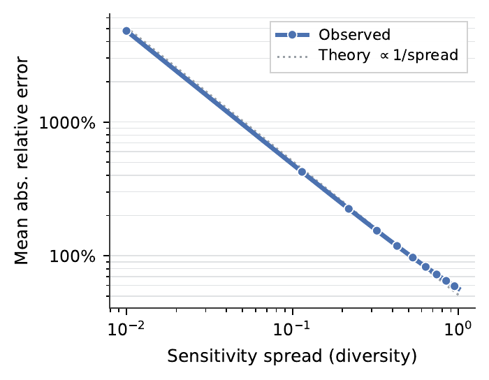
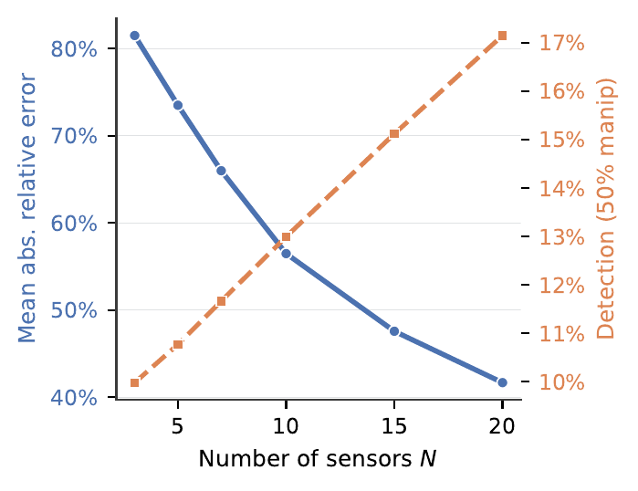
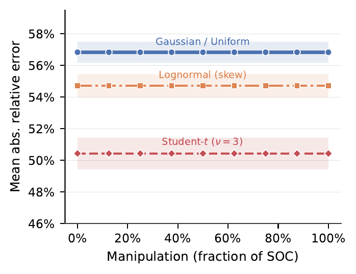
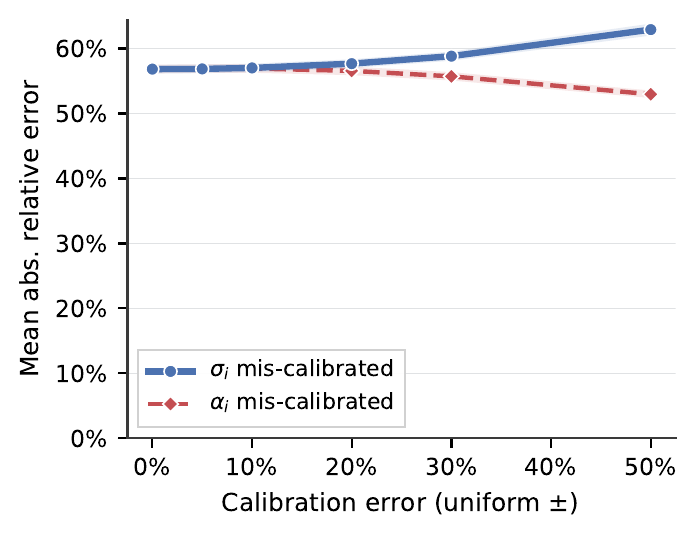

Soil carbon MRV
Credits settle on estimated SOC. The paper measures how eight spectral models respond when the site state is staged before reading.
Accepted MARBLE 2026 Limassol, Cyprus, 16-18 September 2026

The problem, the mechanism, why sensor diversity matters, and the evidence, in one narrated film.
Blockchain oracle networks, including decentralised physical infrastructure networks (DePINs), report physical measurements from a source that can manipulate the underlying process. A carbon project operator, for example, can dry a site before measurement and be paid for soil organic carbon (SOC) that was never stored. Peer prediction covers discrete signals under a strategic source, or continuous reports under an honest source, but not both at once. We close that gap for Gaussian reports. Strict propriety of the continuous ranked probability score (CRPS) settles the reporting stage alone. Our result concerns the source stage. A report-only settlement rule whose honest-source payoff is non-decreasing in the true value identifies and deters source manipulation if and only if the sensors respond to that manipulation by different amounts. When they respond identically, manipulation is observationally equivalent to a genuine rise in SOC, and CRPS translation equivariance leaves every peer score unchanged, so no such rule deters the source. Necessity follows from invariance rather than from the signal enumeration available in the discrete case. The source-stage estimator is ordinary weighted least squares, and the contribution is the characterisation around it. With eight calibrated SOC models on 37,280 real European soil spectra, shift-naive aggregators over-credit by up to 57% under a calibrated moisture perturbation while the joint estimate stays near-unbiased. The guarantee holds on the equilibrium path for non-colluding reporters and inherits the models' own calibration error.
Theorem · Source deterrence if and only if sensor diversity
In the flat-prior Gaussian reporting model, CRPS peer scoring makes truthful reporting a strict best response at the honest-source equilibrium. Fix truthful reports by non-colluding reporters. A penalty P then exists for which s = 0 is a strict source best response if and only if the sensor sensitivities αi are not all equal. When they are all equal, a manipulation at θ0 and an honest source at the higher value θ0 + ᾱs induce exactly the same report law, so no admissible settlement rule can tell them apart, whatever its scoring or penalty.
Three sensors report Gaussian beliefs about one parcel, each with its own precision. Drag the manipulation and watch what the reports reveal. With identical sensitivities, every mean shifts by the same amount, so the shift is indistinguishable from a genuine rise in SOC. With diverse sensitivities, the design matrix [1 | α] separates the two, and the manipulation is recovered exactly.
š = 3.0 g/kg manipulation identified



Each sweep relaxes one assumption of the idealised model and runs with the released code. Correlated residuals, which the eight models share because they read one spectrum, sharpen detection rather than weaken it: at fifty percent manipulation, detection power rises from 14% at ρ = 0 to 47% at ρ = 0.9.



The drag example teaches the condition. This panel applies the same algebra to the eight measured models, using the parameters reported in the paper. Switch a model off, stage the site, or compress the response spread, and every reading recomputes in closed form.
Diversity holds the pattern across readers separates staging from carbon
| Included | Model | Noise σi | Response αi | Response, to scale |
|---|
Deterrent stake
Readings in g/kg of soil organic carbon. The payout row prices one round on the median mineral parcel at 19.9 g/kg. What deters is the detector's power above its false-alarm rate, not its raw power; crediting on the joint estimate removes the gain outright and needs no stake, at the cost of a higher honest-case error.
The theorem is not about soil. It is about payment settled on a continuous measurement that the paid party can stage before it is taken. Any domain with that shape admits the same test, and the test asks five things of it.
Credits settle on estimated SOC. The paper measures how eight spectral models respond when the site state is staged before reading.
A continuous concentration or load can be moved by timing, flushing or dilution. The test asks whether independent readers move differently.
Operations can change around an observation window. The mechanism needs readers with different physical or temporal sensitivities.
If every reader is the same instrument or model, reports alone cannot separate staging from a real increase. Add a modality or obtain trusted truth.
Workable with a stake the mechanism identifies staging
Every simulation figure regenerates from the committed experiment outputs, with no dataset and no GPU. Re-running the experiments needs the LUCAS 2018 topsoil CSV, which its licence does not allow us to redistribute.
git clone https://github.com/Rqcker/crps-wls cd crps-wls pip install -r requirements.txt python -m src.plots # figures from the committed CSVs python -m src.experiments # all 16 experiments; needs the LUCAS CSV
@inproceedings{song2026manipulation,
author = {Song, Junhao and Rolandi, Tanis and Novocky, Adam and
Biffis, Enrico and Knottenbelt, William},
title = {Manipulation-Resistant Oracles via Continuous Peer
Prediction},
booktitle = {Mathematical Research for Blockchain Economy (MARBLE 2026)},
publisher = {Springer},
year = {2026},
eprint = {2610.35888},
archivePrefix = {arXiv},
primaryClass = {stat.AP}
}